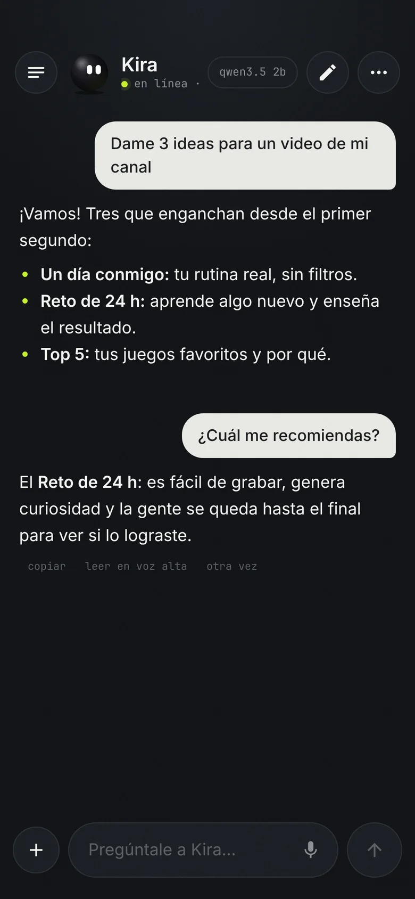
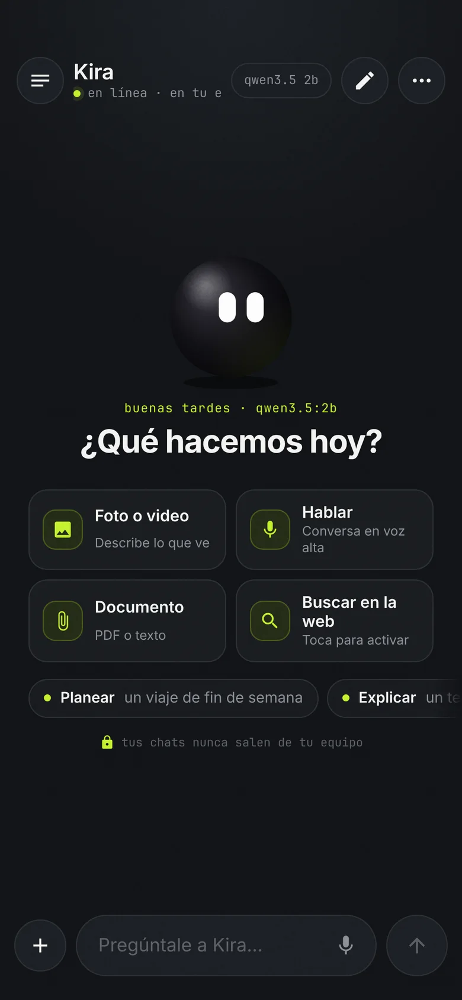
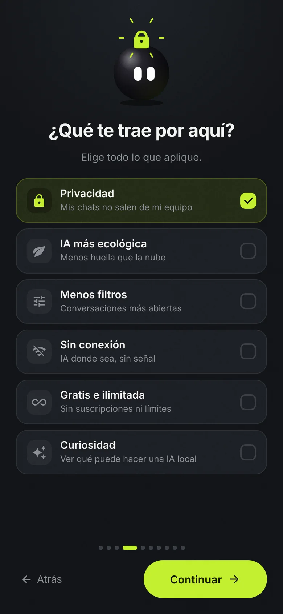
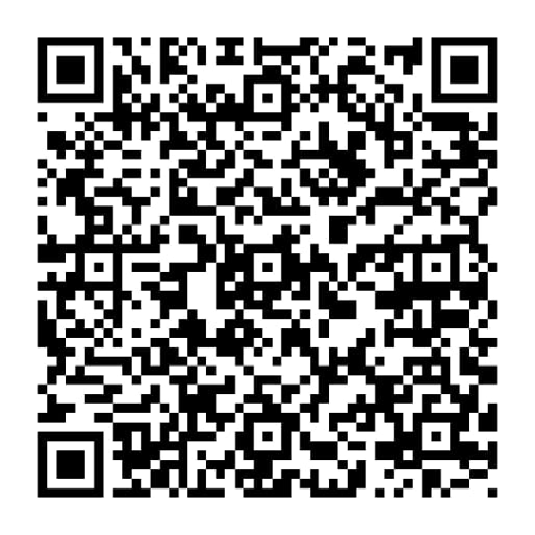

Privada
Tus conversaciones se guardan en tu teléfono. Nadie más las lee.
IA privada para Android · gratis
Kira responde sin internet, sin cuenta y sin mandar tus chats a ningún servidor. Ocupa 9,5 MB y funciona en Android 8 o superior.

Kira no necesita internet, ni una cuenta, ni tus datos. Solo tu teléfono y ganas de hablar.
Qué es Kira
Tus conversaciones se guardan en tu teléfono. Nadie más las lee.
En un avión, en el monte o en un apagón: sigue respondiendo.
Una pelota que piensa, se ríe, se duerme y reacciona a lo que eliges.
Sin suscripciones ni límites. Si te gusta, puedes invitarle un café.
Funciones


Personalidad
Toca un gesto y mira cómo reacciona. Así responde dentro de la app a lo que eliges y a lo que le cuentas.
Privacidad
Internet solo se usa para descargar el cerebro una vez. Después, Kira funciona en modo avión.
Cerebros
Qwen 3 · 1.7B
Responde ágil, razona y acierta en cálculos.
Qwen 3.5 · 2B
Escribe un poco mejor, pero va más lento.
Qwen 2.5 · 0.5B
Ultrarrápido para charlar; se equivoca más.
Velocidades medidas en un teléfono con procesador Unisoc T820. Dentro de la app hay ocho cerebros para elegir, también para programar y razonar paso a paso.
Hoja de ruta
Apoya el proyecto
Cada café son horas de trabajo y funciones nuevas. Escanea el código con Nequi o con la app de tu banco (Bre-B) y elige cuánto.

Sí. Descargas el cerebro una vez y desde ahí Kira responde dentro de tu teléfono, incluso en modo avión.
Android 8 o superior con procesador de 64 bits. Para ir cómodo recomendamos 4 GB de RAM o más.
Sí: sin suscripciones, sin anuncios y sin límite de mensajes. Las donaciones son opcionales.
Kira todavía no está en Play Store. Al abrir el APK, Android te pedirá permitir instalar apps de esa fuente.
Nada sale de tu teléfono. Solo si activas la búsqueda web se envía tu consulta a Wikipedia, nunca tu conversación.